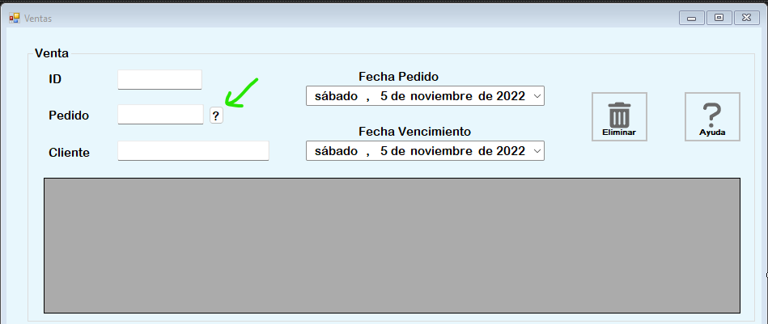
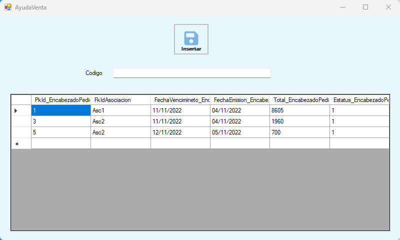
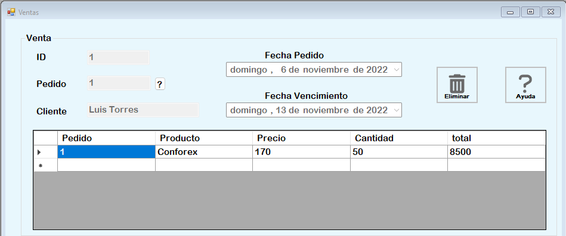
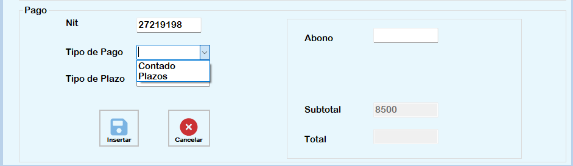
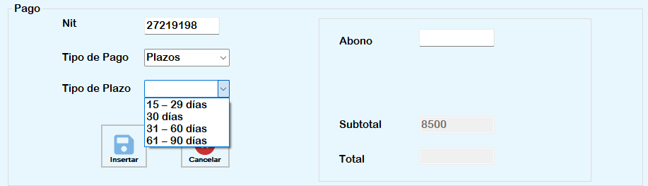
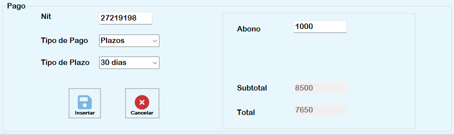
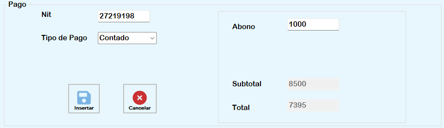
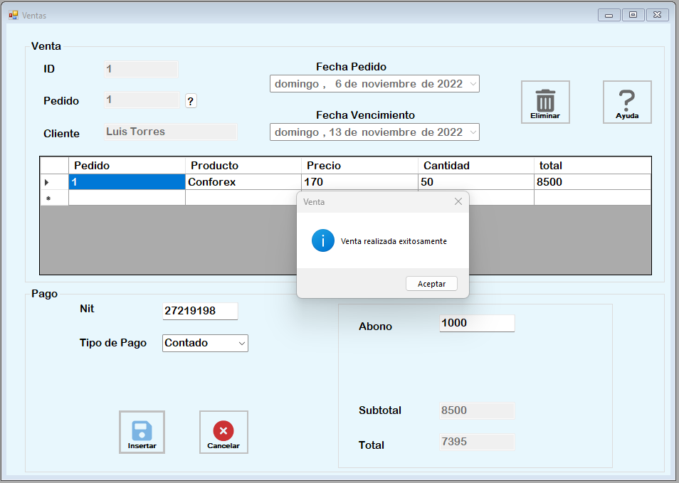

Proceso Venta
El proceso de venta tiene como objetivo registrar una nueva venta al sistema, o Cancelar un pedido. Para ello Tenemos dos opciones. Primero Para cancelar un pedido debemos seleccionar un pedido.
Al Oprimir el boton saldra un formulario donde seleccionaremos la fila y oprimiremos el boton insertar.
Luego Oprimimos el boton de ? otra vez y cargará el Id y se rellenará todos lo campos necesarios del pedido. Luego tendremos que eliminar el pedido oprimiendo el boton eliminar.
Registro de Venta
Luego para registrar un venta se realizarán los mismo pasos anteriores sin oprimir el boton eliminar.

Debemos llenar el campo del nit y luego seleccionar el tipo de pago donde tenemos dos opciones que son contado o plazos
Si seleccionamos la opcion por plazos tendremos otro combobox que nos mostrara las opciones
Al seleccionar una opcion se mostrara el total de la venta y tendremos que poner cuanto se pagará si toda la cuota o un abono inicial
Si seleccionaramos contado en tipo de pago solo llenariamos el campo abono igualmente si se quiere poner todo el monto o solo un abono inicial
Para confirmar la venta oprimimos el boton insertar en el caso de que la queramos cancelar oprimimos cancelar, Si la venta se genera exitosamente se mostrara un mensaje de confirmación
